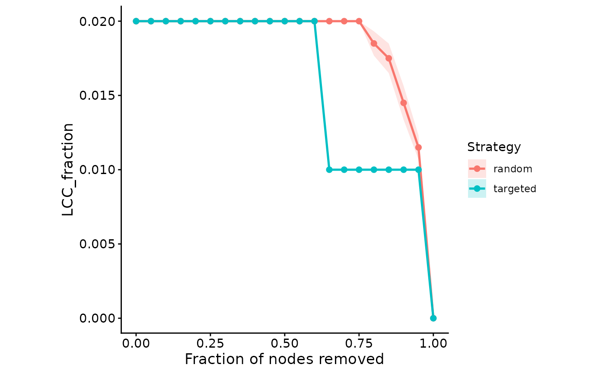

Plot a network perturbation (attack) curve
Source:R/ggnetview_perturbation_curve.R
ggnetview_perturbation_curve.RdRenders the perturbation curve produced by [get_network_perturbation()] – a chosen topology metric against the fraction of nodes removed, coloured by strategy. For the random strategy a mean +/- standard-error ribbon is drawn. The styling matches the other `ggnetview_*` plots (`theme_classic`, square aspect, black axes).
Examples
# \donttest{
data(ppi_example)
obj <- build_graph_from_df(
df = ppi_example$ppi,
node_annotation = ppi_example$annotation
)
rnd <- get_network_perturbation(obj, strategy = "random", bootstrap = 20)
tgt <- get_network_perturbation(obj, strategy = "targeted",
centrality = "degree")
ggnetview_perturbation_curve(rbind(rnd$curve, tgt$curve))
#> Warning: Removed 21 rows containing missing values or values outside the scale range
#> (`geom_ribbon()`).

# }